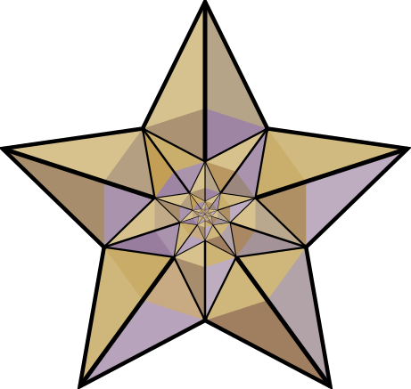

El Cezeri, çalışmalarına dair ön araştırmalarını şöyle anlatıyor; “Benden çok evvel gelen âlimlerin kitaplarını ve onları takip edenlerin çalışmalarını gözden geçirdim. Nihayet nakillerden kurtuldum, başkalarının yaptıklarından sıyrıldım ve problemlere kendi gözümle bakabildim. Uygulamaya dönüştürülemeyen her teknik ilmin, doğru ile yanlış arasında muallakta kaldığını gördüm.”
El Cezeri, yapacağı cihaz, icat ve buluşların önce taslak çizimini yapmış, ardından da bunları maket olarak tasarlamıştır. Bu maketleri oluşturmak için de geometri kurallarını kullanmış ve birçok hesaplama yöntemiyle ilgilenmiştir.
Medresedeki öğreniminin ardından uzun süre bilimsel çalışmalar yapan Cezeri, tüm bölge idarecileri tarafından tanınmıştır. Kendisine büyük saygı ve hürmet duyulan bir bilim insanı olmuştur. Artuklular’ın tüm Güneydoğu’yu hakimiyeti altına alması ve Diyarbakır’ı başkent olarak ilan etmesinin ardından Diyarbakır’a davet edilmiştir.
 Daveti kabul etmesinin ardından çalışmalarına Diyarbakır’da devam etmiştir. Çalışmaları sonucunda Artuklular’a birçok mekanik araç geliştirmiştir.
Cezeri, Artuklu Beyi’nin talebiyle geliştirdiği tüm araçların yapım aşamalarını hem yazarak hem de resmederek kitaplaştırmıştır.